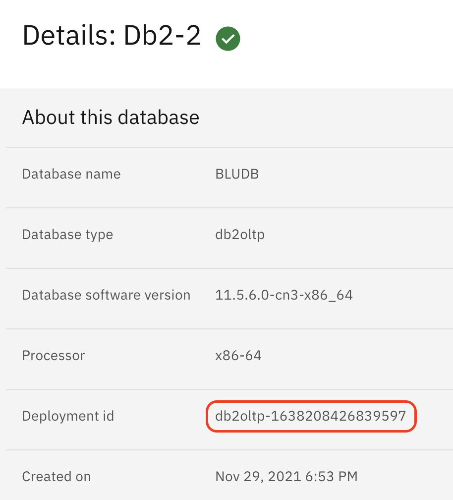
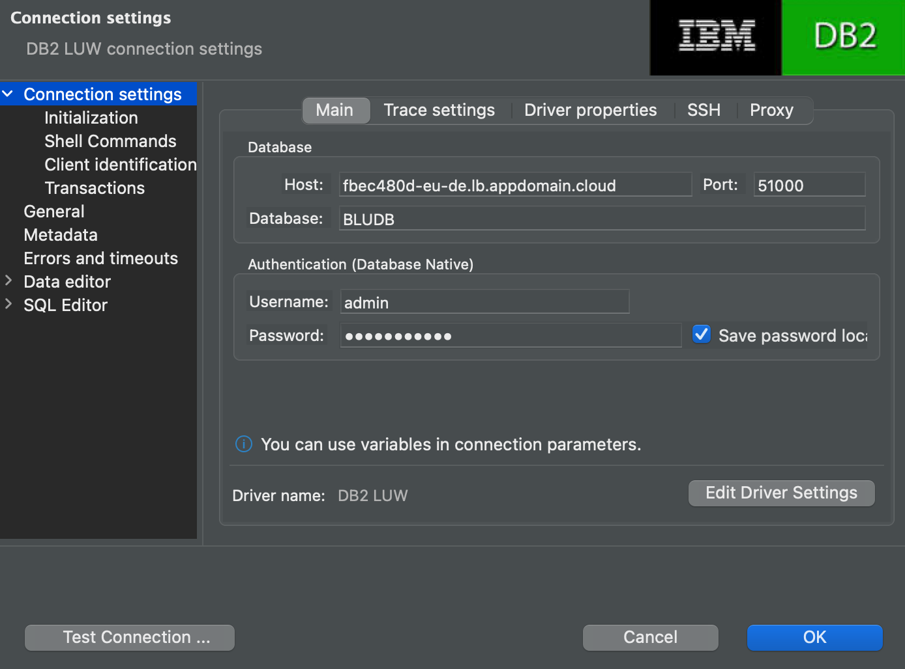
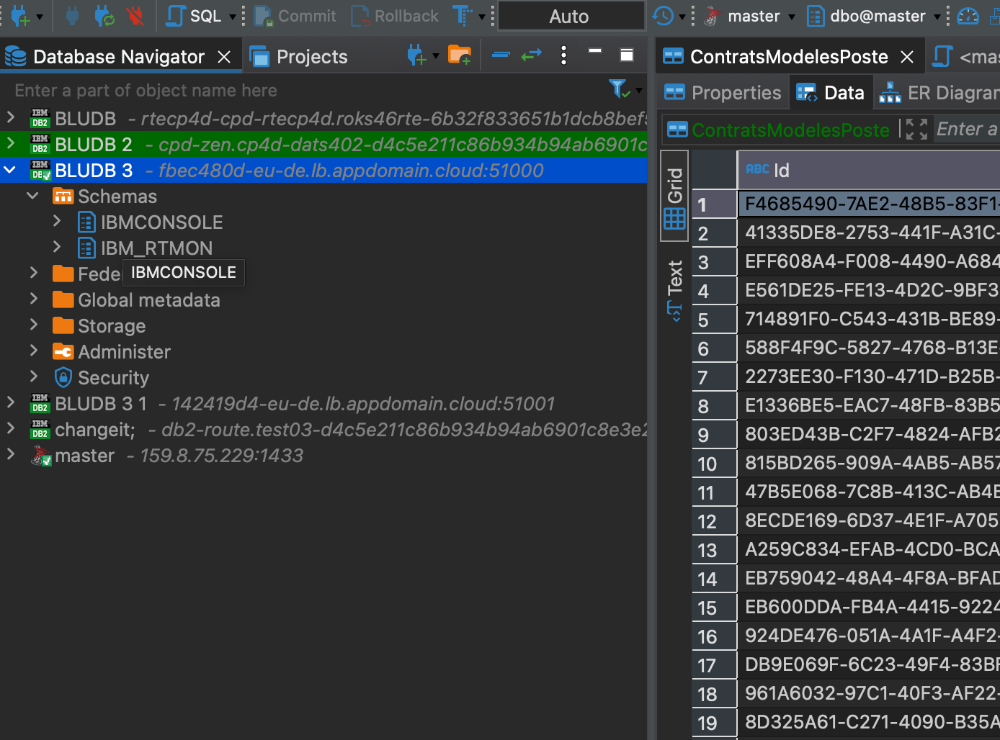
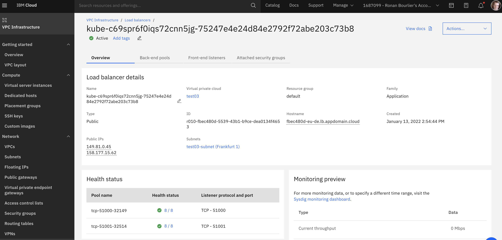

View Db2 databases externally from a CP4D installed on ROKS VPC Gen2
A specificity from ROKS VPC Gen2 in IBM Cloud is the security level. The node servers don't have an external IP address and cannot be accessed externally.
Once you have installed Db2 in CP4D, the usual way to vie the database externally is by using NodePort access. In our case this is not working since the node cannot be viewed externally. The solution is to use a Load Balancer that needs to be added.
Here is the procedure.
Log in to Openshift environment and go to your CP4D project.
$ oc login -u apikey -p XXXXXXXX --server=https://c100-e.eu-de.containers.cloud.ibm.com:NNNN
Login successful.
You have access to 69 projects, the list has been suppressed. You can list all projects with 'oc projects'
Using project "cp4d".
$ oc project cp4d
Already on project "cp4d" on server "https://c100-e.eu-de.containers.cloud.ibm.com:NNNNN"
Find the pods for your database. In the Databases > Details page, find the Deployment id.

Note down the deployment id as it it will used all along the procedure. In this case db2oltp-1638208426839597
Because a VPC in IBM Cloud is oriented toward security, workers nodes are not visible from outside of its LAN. We cannot use a regular NodePort service. Let's use a LoadBalancer service in this case.
Here is the example file
``` yaml title="lb-db2.py" apiVersion: v1 kind: Service metadata: name: lb-db2-2 annotations: service.kubernetes.io/ibm-load-balancer-cloud-provider-ip-type: "public" spec: ports: - name: db protocol: TCP port: 51000 targetPort: 50000 - name: db-ssl protocol: TCP port: 51001 targetPort: 50001 type: LoadBalancer selector: app: db2oltp-1638208426839597 component: db2oltp formation_id: db2oltp-1638208426839597 role: db type: engine
Some explanations.
- metadata.name : use the name you want. I personaly use `lb-` followed by the name of my database
- ports : ports name are the one you want. I keep it to db and db-ssl to know what it is. I this example I create 2 ports in my load balancer forwarding to internal database port. The external port 51000 forwards to the non SSL 50000 database port. the external port 51001 forwards to the SSL 50001 database port.
- selector: `app` and `formation_id` point to the `deployment id` we noted down earlier.
Once your file configured and saved as `lb-db2.yaml`, let's use it.
$ oc get svc lb-db2-2
NAME TYPE CLUSTER-IP EXTERNAL-IP PORT(S) AGE
lb-db2-2 LoadBalancer 172.21.100.200 This command will trigger the creation of a Load Balancer in VPC
Once the load balancer is created, you get all information in the command line.
With this command you get the domain name to connect to your database. In our case `fbec480d-eu-de.lb.appdomain.cloud`and you can test it.
$ nc -zv fbec480d-eu-de.lb.appdomain.cloud 51001 Connection to fbec480d-eu-de.lb.appdomain.cloud (158.177.15.62) 51001 port [tcp/*] succeeded! ```
This is the best solution for now and I am still trying to find an easier solution since this one needs to be done for each database created that need an external access.
Connexion from a IDE
Here is an example of a connexion through an IDE. I use DBeaver.


More details
If you need more details on the load balancer, you can find it in the VPC load balancer
